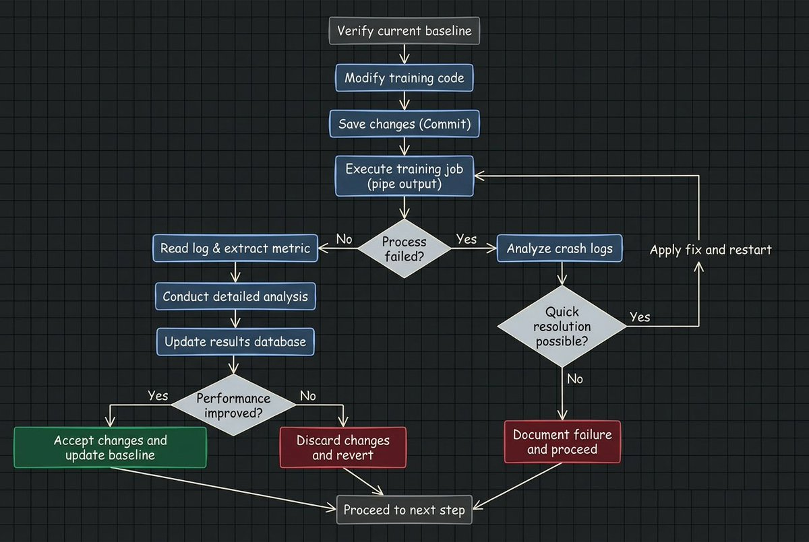
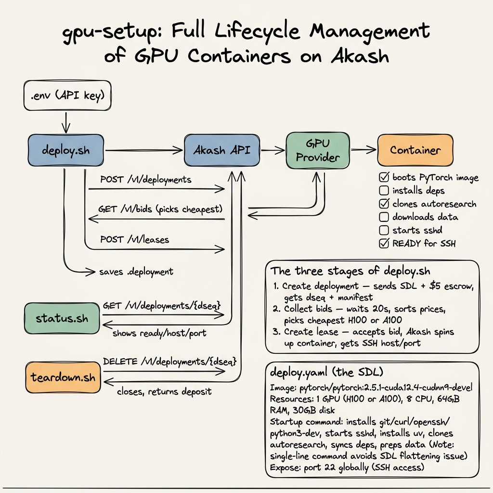

What is Autoresearch?
Autoresearch is a small open‑source project from Andrej Karpathy that turns a single‑GPU ML training setup into an autonomous “experiment loop” an AI agent can run for you. Instead of promising a general AI scientist, it focuses on one narrow job: automatically tweaking a compact language‑model training script, running short experiments, and keeping only the changes that improve a fixed evaluation metric.
The repo is intentionally tiny (around 600–630 lines of Python) and built on a stripped‑down version of Karpathy’s nanochat LLM trainer. A human writes the research “program” in a Markdown file, and an external LLM agent (Claude, Codex, etc.) uses that spec to decide how to edit the training code and what to try next.
Why should I care?
Better neural network architectures give you more capable models without more hardware, so systematically exploring architectures is one of the highest‑ROI things you can do in ML.
Autoresearch is Karpathy’s way of turning that exploration into a closed loop: an agent is allowed to rewrite a compact training script, run 5‑minute experiments on a fixed dataset, and keep only the changes that improve a simple metric like validation bits‑per‑byte.
If this pattern scales, it means a single GPU can quietly grind through hundreds of architecture and training tweaks while you sleep, making “AI that improves AI” a practical tool instead of a thought experiment.
I think Manthan Gupta did a great job of explaining this. If you want more, read his article here.
How it Works
At a high level, Autoresearch turns “AI research” into a bounded optimization problem.
The agent is not browsing papers, forming original theories, or deciding what science should matter. Its job is much narrower, and revolves around this scientific loop:
- Edit the training code
- Run an experiment for a fixed amount of time
- Measure the result using a fixed metric
- Keep the change if it improves the score
- Revert it if it does not
- Repeat
Repository Structure
autoresearch/
├── .gitignore
├── .python-version
├── README.md # project overview + quick start
├── analysis.ipynb # notebook for analyzing experiment results
├── prepare.py # fixed: data download, tokenizer, dataloader, eval (DO NOT MODIFY)
├── train.py # the one file the agent edits: model, optimizer, training loop
├── program.md # instructions for the AI agent ("the skill")
├── progress.png # teaser image for README
├── pyproject.toml # dependencies (torch, numpy, tiktoken, etc.)
└── uv.lock # lockfile for uvAutoresearch really lives in three files: program.md, prepare.py, and train.py.
- program.md: the human‑authored research script that tells the agent what metric to optimize, what it’s allowed to edit, how to launch runs, and when to keep or revert a change.
- prepare.py: the fixed environment: it downloads the dataset, builds tokenizers and dataloaders, and defines the validation evaluation loop. The agent cannot touch this file, which means it can’t game the metric by quietly changing the data split or eval code.
- train.py: the entire playground the agent operates in. It contains the compact GPT‑style model, optimizer, hyperparameters, and training loop wired into
prepare.py’s data and eval. Every “research” step the agent takes is just another diff to this one file.

Quickstart | The Easiest Way to Run Autoresearch
Karpathy's original repository outlines the requirements to run autoresearch.
Requirements: A single NVIDIA GPU (tested on H100), Python 3.10+, uv.
Some providers you can use include:
- Runpod
- Akash Network (my preference b/c you get $100 in free credits)
I set up a quick script in my fork of the original Karpathy repository in case you need help deploying the Akash GPU.
gpu-setup | requirements
You need four things before starting:
- An Akash Console account: sign up at console.akash.network. New accounts get free credits.
- An Akash API key: grab one from the Console dashboard. It starts with
ac.sk. - jq, a command line JSON tool. Install it:
Mac:brew install jq
Linux:sudo apt-get install -y jq - sshpass, which lets you SSH with a password in one command:
Mac:brew install hudochenkov/sshpass/sshpass
Linux:sudo apt-get install -y sshpass
gpu-setup | steps to run
1. Clone this repository
git clone https://github.com/arjanssuri/autoresearch_gpu_setup.git
cd autoresearch_gpu_setup2. Add your API key. Create a file called .env in the repo root:
echo "AKASH_API_KEY=ac.sk.production.your-key-here" > .env3. Deploy
cd gpu-setup
./deploy.sh4. Wait for setup. The container needs ~5 minutes after deploy to finish installing everything. You can check if it's ready:
./status.shLook for "ready": 1. That means it's good to go.
5. SSH in. The deploy script prints your exact SSH command. It looks like this:
sshpass -p 'autoresearch' ssh -p <PORT> root@<HOST>6. Run Autoresearch
cd /workspace/autoresearch
uv run train.pyThat runs one 5-minute training experiment. To start the full autonomous loop where the AI runs experiments on its own:
# install claude code
curl -fsSL https://deb.nodesource.com/setup_22.x | bash -
apt-get install -y nodejs
npm install -g @anthropic-ai/claude-code
# set your anthropic key
export ANTHROPIC_API_KEY=your-anthropic-key
# start the loop
claude "Read program.md and let's kick off a new experiment"7. Teardown when done
cd gpu-setup
./teardown.shWhat you get
- NVIDIA H100 80GB or A100 80GB
- 8 CPU cores, 64GB RAM, 30GB storage
- PyTorch 2.5.1 + CUDA 12.4
- autoresearch cloned and ready at
/workspace/autoresearch - SSH password:
autoresearch
Cost
The deploy script picks the cheapest GPU bid automatically. With $100 in credits you can run for several hours. The $5 escrow deposit gets returned (minus usage) when you tear down.
Customizing
Edit deploy.yaml if you want to change the GPU model, memory, storage, or base Docker image.
gpu-setup | How It Works
.env (API key)
│
▼
deploy.sh ──► Akash API ──► GPU Provider ──► Container
│ │ │ │
│ POST /v1/deployments boots PyTorch image
│ │ │
│ GET /v1/bids installs deps
│ (picks cheapest) clones autoresearch
│ │ downloads data
│ POST /v1/leases starts sshd
│ │ │
│ saves .deployment ready for SSH
▼
status.sh ──► GET /v1/deployments/{dseq} ──► shows ready/host/port
teardown.sh ──► DELETE /v1/deployments/{dseq} ──► closes, returns deposit
And you're set up!
Conclusion
Autoresearch is the interesting idea; gpu-setup is the part that makes it practical to use. With a single script and an Akash API key, you can go from reading about the repo to actually running it on an H100 in a few minutes. If you have been curious about agentic research but blocked by infrastructure and CUDA issues, this flow removes most of that friction so you can focus on writing a good program.md and letting the loop run.
Credits, Inspiration, and Good Reads
- Manthan Gupta: How Karpathy's Autoresearch Works And What You Can Learn From It
- Garry Tan: Karpathy just turned one GPU into a research lab
- Andrej Karpathy: the original repository
- My repo: autoresearch_gpu_setup